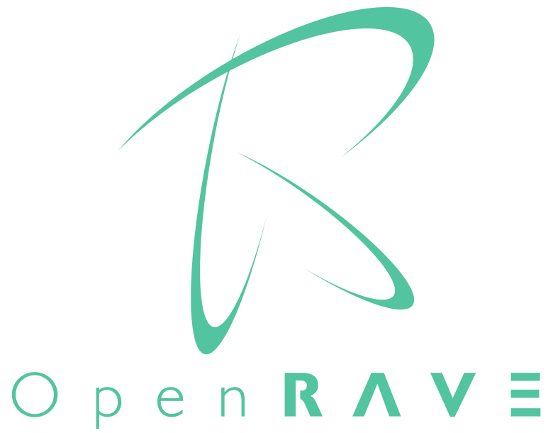

OpenMR: Modular Robots plug-in for Openrave

Contenido
[ocultar]Introduction
OpenMR is an OpenRave Modular Robots plug-in for simulating the locomotion of modular robots. It consist of controllers, robot models and examples.
Hierarchy of Controllers

The controllers are hierarchical. At the lowest level there are the controllers that interact directly with the joints, seting their current torque, position or velocity. Typicall level 0 controllers are: P, PD, PID...
Level 1 controllers set the sequence of reference signals for the level 0 controller in order for the robot to move. Examples of this kind of controllers are gait control tables, sinusoidal generators, central patter generators, neural controllers and so on.
Level 0 controller
Currently there is only one level 0 controller in charge of setting the joint's reference positions.
Servo controller
This controller implements standard servos, which are controlled by setting its reference position. Internally It has a P controller
- API
| setpos s1 [s2] | Set the reference position of all the robot joints, in degrees, in the range [-90,90]. If the robot have N joints, there have to be N arguments. |
| getpos | Return the current position of ALL the robot's servos (in degrees, in the range [-90,90]) |
| setpos1 servo pos | Set the reference position of one joint. The argument servo is the servo number, starting from 0. The argument pos is the reference position (in degrees) [-90,90] |
| getpos1 servo | Return the current servo position (in degrees, in the range [-90,90]. The argument servo is the servo number, starting from 0. |
| record_on file | Start recording the servo position in the specified file. It will generate an octave file |
| record_off | Stop recording. The octave file will be generated |
Level 1 Controllers
- Neuralcontroller
- Generic controller
- Harmonic controller
- Sinusoidal controller
- Others...
Installation and setup
Examples
Videos
| 300|250</youtube>
Locomotion of the Minicube-I modular robot |
300|250</youtube>
Minicube-I Robot: locomotion and simulation with OpenRave |
| 300|250</youtube> Simulating the Cube3 modular robot |
Mailing list
Repository
- Github: https://github.com/Obijuan/openmr
- Old repo (no longer maintained): http://svn.iearobotics.com/openmr/trunk
License
| |
Authors
- Juan Gonzalez-Gomez
- Avinash Ranganath
- David Estevez
Links

News
- 2013/06/14:
- David Estevez has updated openmr for working with he latest openrave
- Sources migrated to github: https://github.com/Obijuan/openmr
- 2011/05/13:
- OpenMR adapted to OpenRave 0.3.2
- Servo Controller:
- Added the RegisterCommand() for all the commands (Suggested by Rosen)
- Added the new getpos command, for reading the servo position of ALL the joints
- 2011/04/25: OpenMR adapted to OpenRave 0.3.1
- 2011/02/11: OpenMr adapted to OpenRave 0.2.19 (r1999)
- 2010/11/19: OpenMr adapted to OpenRave 0.2.15 (r1846).
- 2010/03/08: This page is started